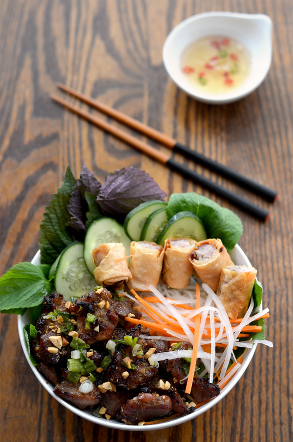

Bún Thịt Nướng

Image reposted under Creative Commons Attribution 2.0 Generic license,
see attribution below.
Description
A flavorful central Vietnamese dish. Recipe credited to www.hungryhuy.com, original post linked here.
Ingredients
- 1.5 lb (680.4 g) pork shoulder sliced (any cut will do)
- 1 package rice noodles small or medium thickness
- 4-6 egg rolls optional
MARINADE
- 3 tbsp shallots minced
- 1.5 tbsp garlic minced
- 1/4 cup sugar
- 1 tbsp fish sauce
- 1/2 tbsp thick soy sauce
- 1/2 tbsp pepper
- 3 tbsp neutral cooking oil
VEGETABLES
- green leaf lettuce
- mint rau thơm
- Vietnamese perilla tiá tô
- Vietnamese balm kinh giới
- cucumbers sliced
GARNISH
- pickled daikon and carrots (đồ chua)
- 1/2 tbsp scallion in oil (mở hành)
- 1/2 tbsp crushed peanuts
DIPPING SAUCE
- prepared fish sauce / nước chấm
Instructions
- Slice the uncooked pork thinly, about 1/8". It helps to slightly freeze it beforehand.
- Mince garlic and shallots. Mix in a bowl with sugar, fish sauce, thick soy sauce, pepper, and oil until sugar dissolves.
- Marinate the meat for 1 hour, or overnight for better results.
- Bake the pork at 375 F for 10-15 minutes or until about 80% cooked. Finish cooking by broiling in the oven until a nice golden brown color develops, flipping the pieces midway. Don't take your eyes off the broiler!
- Assemble your bowl with veggies, noodles, and garnish. Many like to mix the whole bowl up and pour the fish sauce on top, but I like to make individual bites and sauce it slowly.